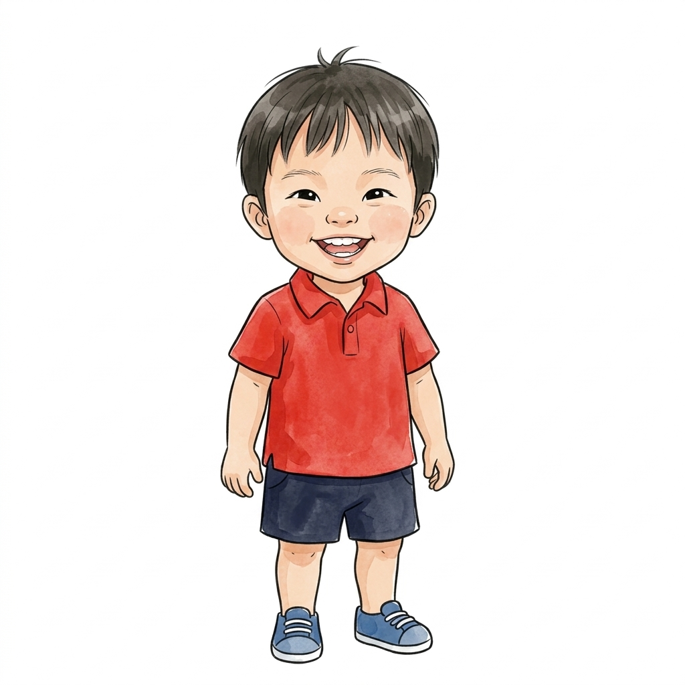
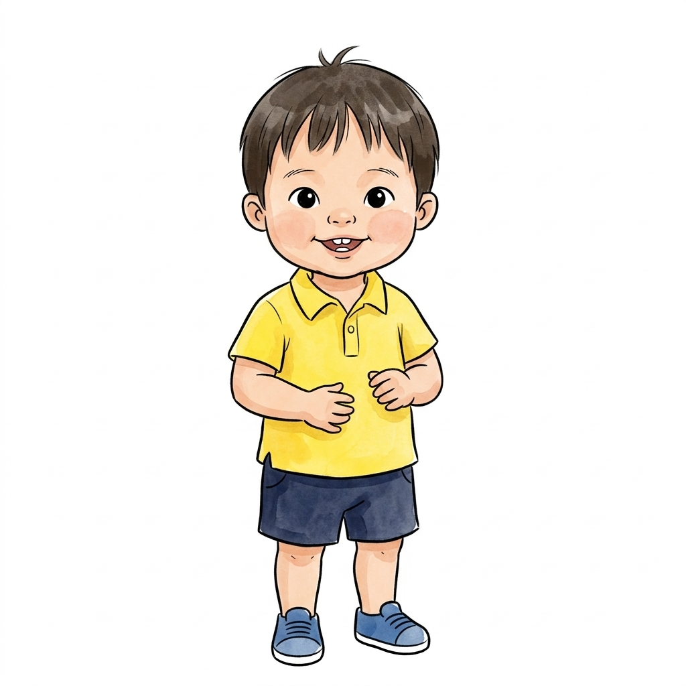
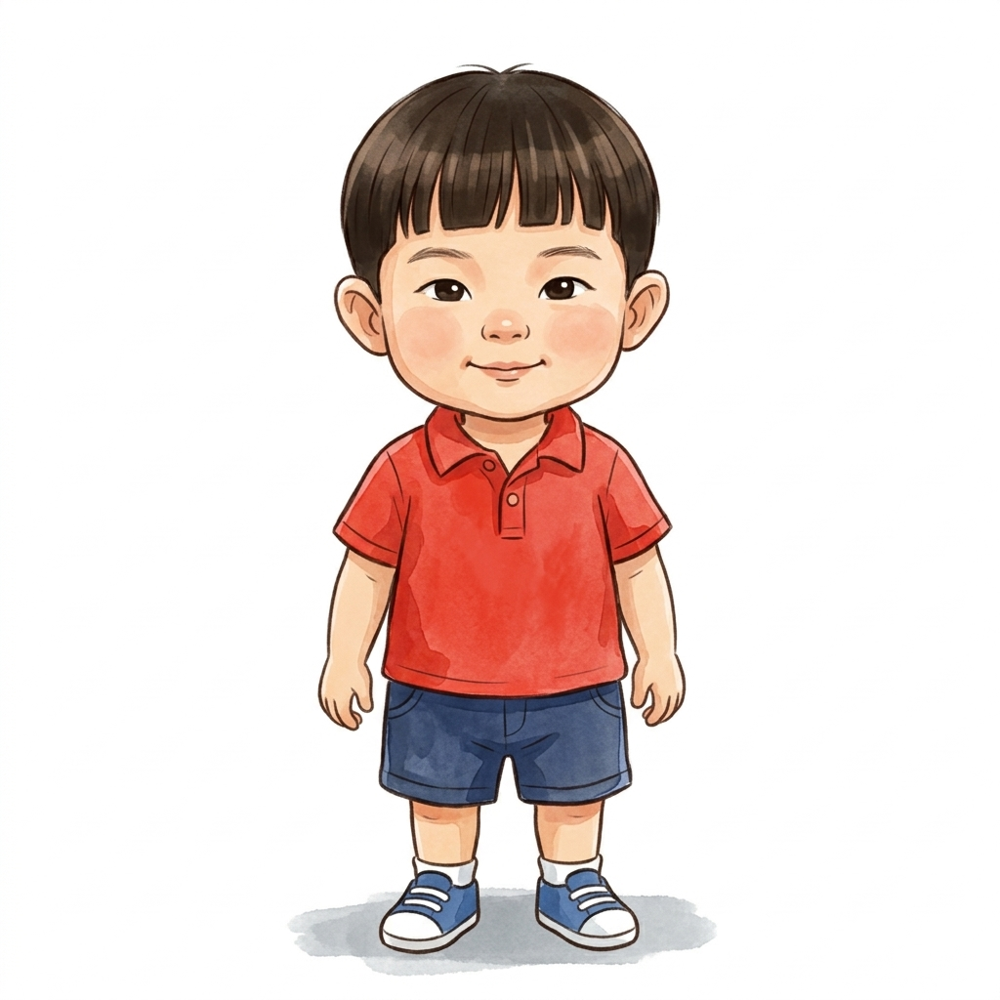
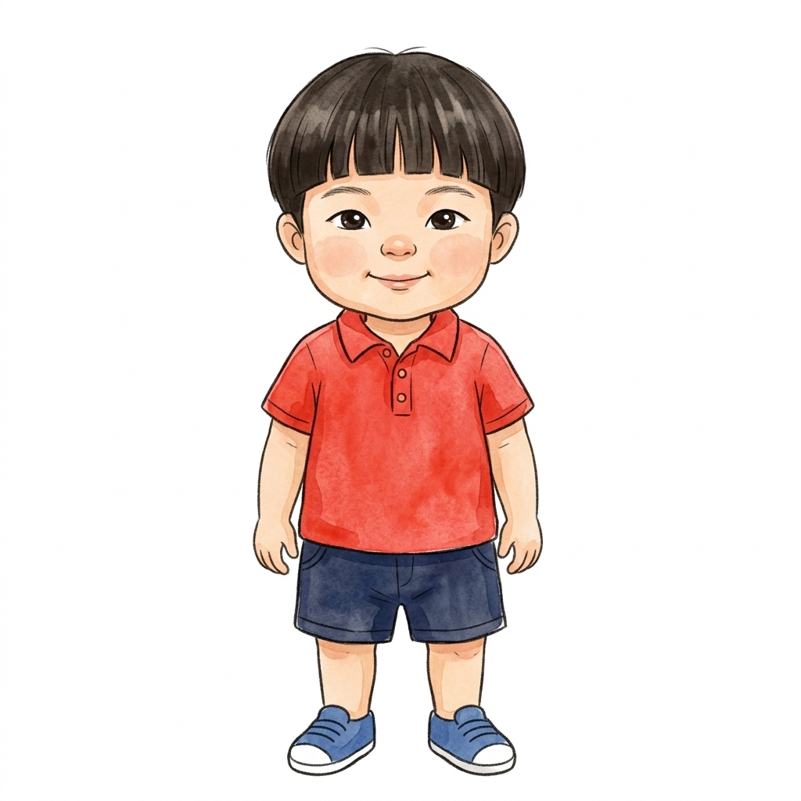
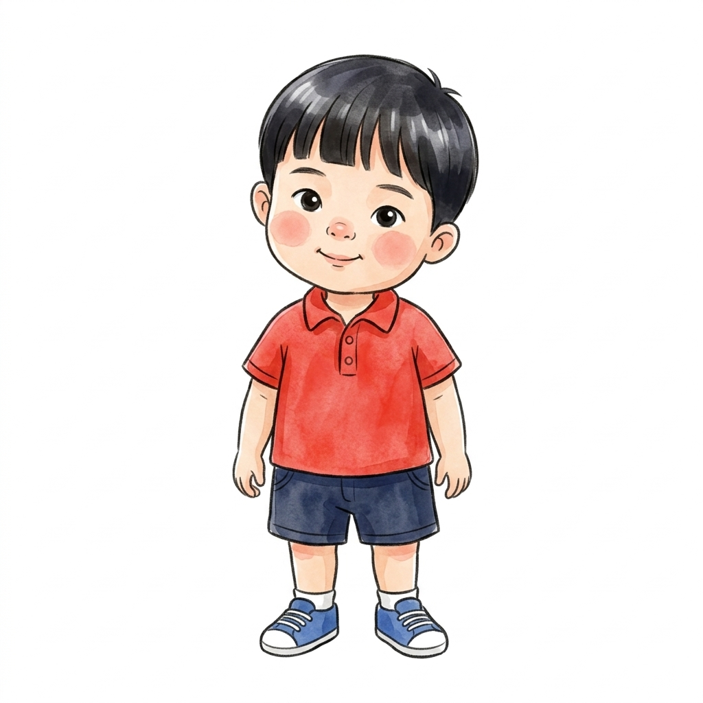
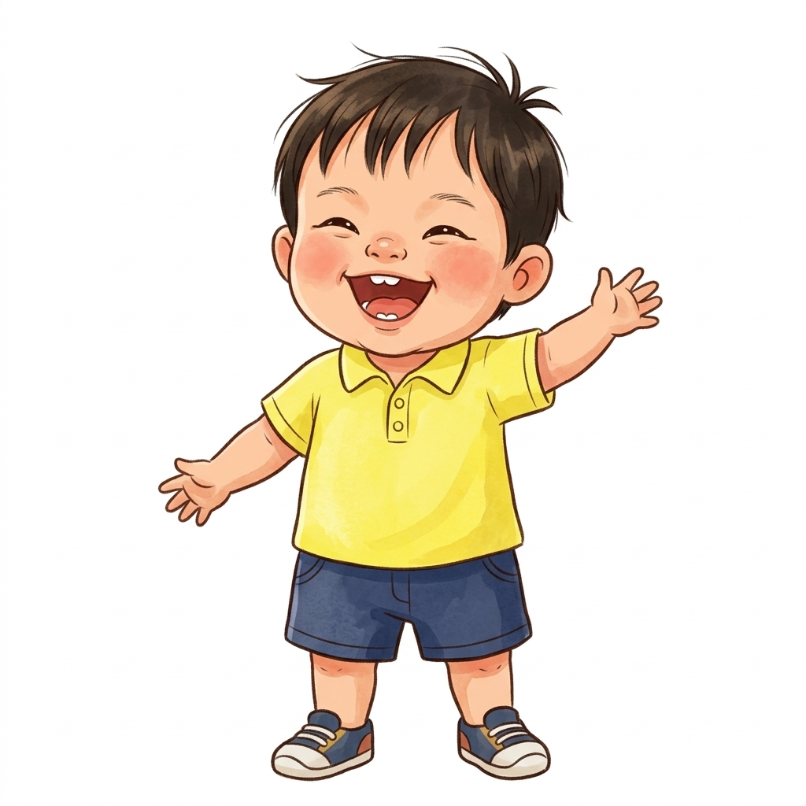
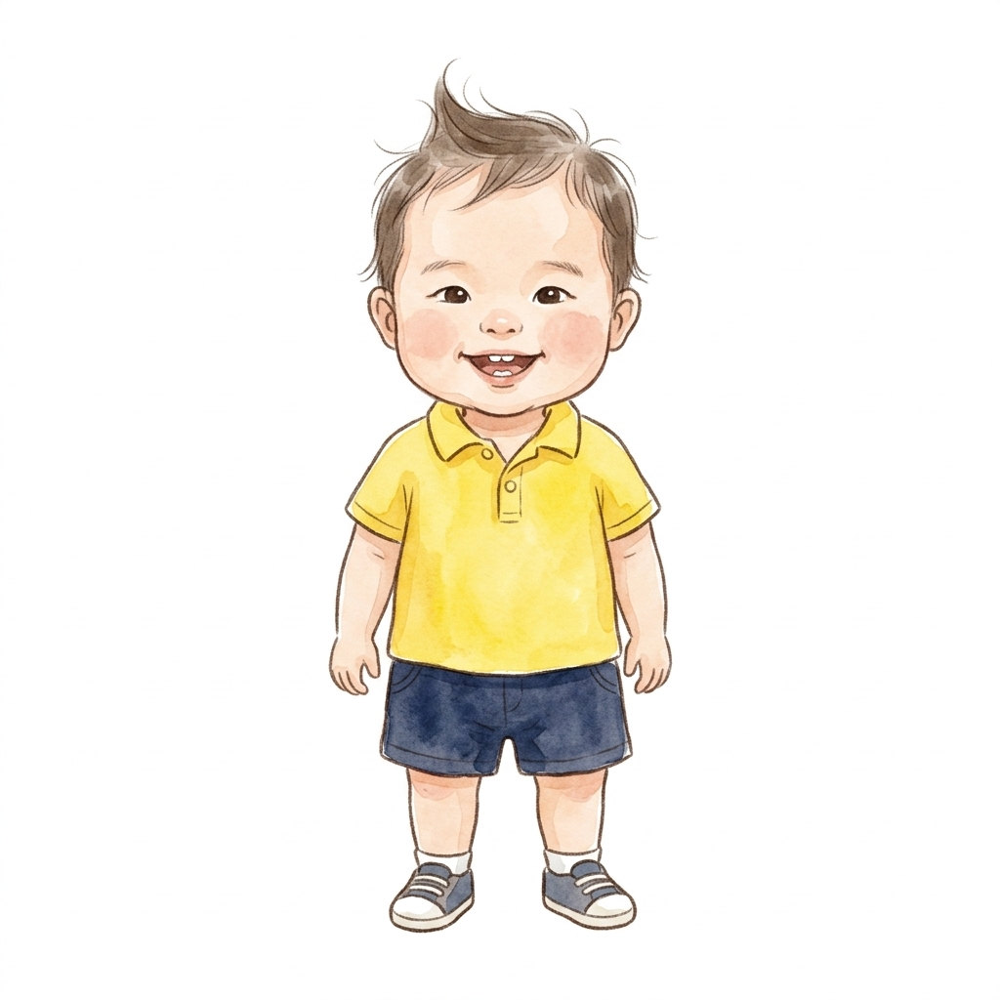

We locked in Luca Option 2 based on your choice! Below, check out the newly drafted Levi Option 4 featuring his non-blocky feathered hair, sharper jawline, and big radiant smile.

✓ Sharper face structure: Leaner jawline with a gentle tapered chin (not round).
✓ Natural feathered hair: Soft separated strands instead of a solid block.
✓ Big bright smile: Large beaming open-mouth grin full of joy!

✓ Playful hair tuft: Standing cowlick at the crown.
✓ Sweet toddler smile: Two front baby teeth showing.
✓ Sunny yellow polo: Perfect cheerful contrast to Levi's red.





If Levi Option 4 hits the mark for his sharper face, natural non-blocky hair, and big radiant smile alongside Luca Option 2, let me know in the chat! Once approved, we will lock both in and start background environments and animation.